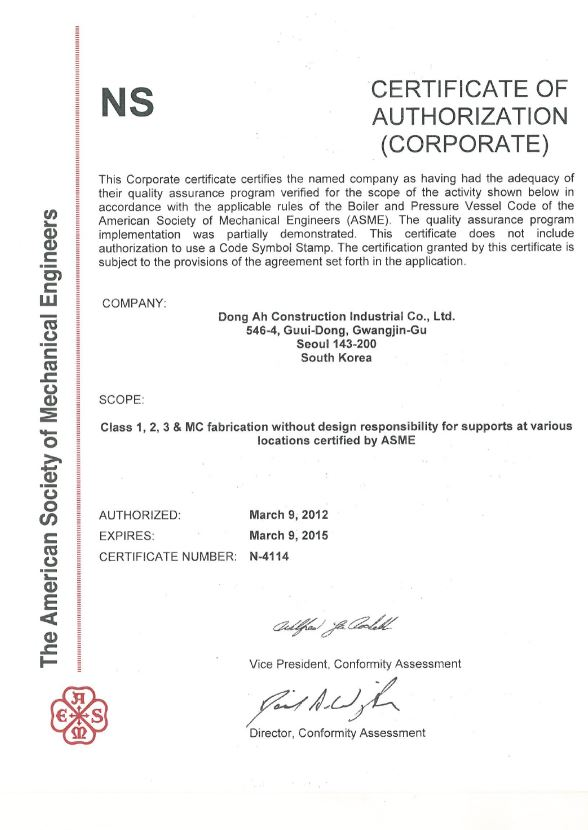
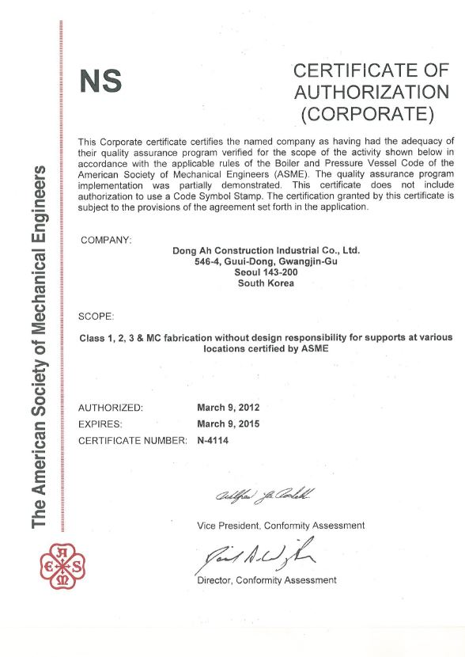

>
기술경영 >
품질경영
품질경영
Let's Make it better
지속적인 프로세스 개선으로 품질경영시스템을 구축합니다.
품질경영 6대 원칙
-
- 고객중심
- 현재고객 및 미래고객의 요구를 이해하고 충족시키며, 고객의 기대를 능가하도록 노력합니다.
-
- 전원참여
- 모든 임직원이 품질경영시스템에 자발적으로 참여하며 고객만족을 위해 최선을 다합니다.
-
- 시스템 준수
- 품질경영시스템을 이해하고 이에 따라 품질목표의 효율적 달성을 위해 노력합니다.
-
- 지속적 개선
- 품질목표성과의 지속적 개선을 인지하고 이를 위해 지속적으로 노력합니다.
-
- 효율적 의사결정
- 데이터 및 정보 분석을 근거로 신속하고 타당한 효율적 의사결정을 합니다.
-
- 상호유익관계
- 내·외부 고객과 협조하며, 상호이익창조를 위한 유익한 관계가 되도록 노력합니다.
동아건설산업은 고객에게 최고의 품질을 제공하기 위해 품질 원칙을 지킵니다.
무엇보다 고객을 최우선으로 생각하며,
고객의 요구사항을 반영하며 지속적인 프로세스 개선으로
품질경영체계를 구축하고 이를 프로젝트 수행의 기본규정으로 준수합니다.
품질방침
01
ISO 9001:2008, KS Q 9001:2009와 고객의 요구사항을 충족시키고, 시시각각 변하는 사회적 변화에 능동적으로 대응하며
사전 품질활동과 시스템을 구축하여 해당 프로세스를 강화하여 경제적인 품질경영체계를 확립하고 이행합니다.
고객이 필요로 하는 제품과 서비스를 제공하고 내·외부 고객의 요구사항을 충족시킴으로써 공신력을 강화합니다. 품질보증팀장은 경영대리인으로서 품질경영체계의 이행과 유지를 위한 권한과 책임을 가지며 경영진은 이를 충분히 지원합니다.
03동아건설산업은 언제나 고객을 최우선으로 생각하며 항상 최고의 품질을 위해 적극적으로 노력합니다. 전 직원은 품질목표달성에 최선을 다하며 품질경영시스템의 효율성을 높이기 위해 지속적인 개선을 시행합니다.
품질경영시스템
-
- 경영책임
- 경영의지
- 고객중심
- 품질방침
- 기획책임
- 권한 및 의사소통
- 경영검토
-
- 측정 및 개선
- 일반사항
- 모니터링 및 측정
- 부적합품의 관리
- 데이터 분석 개선
-
- 제품실현
- 제품실현의 기획
- 고객관련 프로세스
- 설계 및 개발
- 구매
- 생산서비스 제공
- 시험장비관리
-
- 자원관리
- 자원확보
- 인적자원
- 기본구조
- 작업환경
품질 인증서
-
- ASEM
- ASME(American Society of Mechanical Engineers)인증서. 원자력 시공과 관련하여 ASME Code에 의한 품질 보증 활동을 심사하여 만족스러울 경우 ASME에서 발행하는 원자력 품질 보증 자격 인증서입니다. ※ 당사의 인증서 범위는 ASME NA/NPT/NS입니다.
 

-
- KEPIC
- 국내 원자력발전소 건설 및 운영의 안정성 및 신뢰성 확보를 위하여 일정한 자격을 갖춘 조직과 인력이 업무를 수행토록 하기 위하여 대한전기협회 주관으로 제정한 전력산업기술기준(Korea Electric Power Industry Code)에 따라 발전소 시공과 관련된 품질보증 활동을 심사하여 만족스러울 경우 발행하는 인증서입니다. ※ 당사의 인증서 범위는 KEPIC MN/SN/EN/MH입니다.


-
- ISO 9001
- 국제 표준화 기구(International Organization for Standardization)에서 발행한 품질경영체계의 규격(ISO Family) 요건에 따라 기업 품질경영체계의 수립 및 이행 상태를 제3의 인증기관이 심사하여 발행하는 인증서입니다. ※ 당사의 인증서 범위는 ISO 9001입니다.